In experiments, the beam emission spectroscopy (BES) and microwave
reflectometer can measure electron density fluctuation. The electron cyclotron
emission (ECE) radiometer can measure electron temperature fluctuation. In the
ideal MHD theory, we assume that
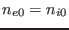,
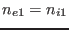, and
the mass density is given approximately by
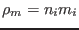. Then the
linearized continuity equation,
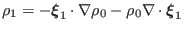, is written as
which gives relationship between the density fluctuation and plasma
displacement. Similarly, in the ideal MHD theory, we assume that
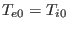,
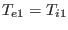, and
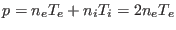. Then
the linearized equation of state,
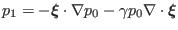, is written as
Using Eq. () to eliminate 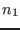, Eq. () is written as
The continuity equation is written as
Neglecting the compressible term, the above equation is written as
Using
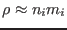 and 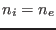, the above equation is written as
Equation (314) relates the radial displacement obtained from a
eigenvalue code with the density perturbation 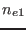, which can be measured
by the reflectometer in experiments.
We know that the radial plasma displacement
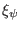 is related to the
perturbed thermal pressure through the relation:
Neglecting the compressible term, the above equation is written as
yj
2015-09-04